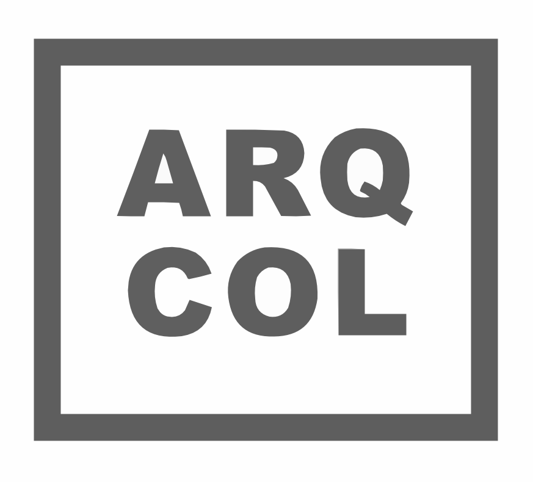

Gobernanza basada en evidencia
Traducimos la complejidad del territorio en certidumbre estratégica para la inversión pública y el desarrollo social.
Conocer Metodología ↓
Diagnóstico Regional Estratégico
Las decisiones políticas requieren fundamentos técnicos. Analizamos dinámicas sociodemográficas y espaciales para estructurar Planes de Desarrollo con precisión milimétrica.

Inversión Pública Eficiente
Eliminamos la inversión a ciegas. Mediante algoritmos espaciales, identificamos las zonas de mayor rentabilidad social para ubicar equipamiento y reactivar el espacio público.

Obra Pública de Impacto
Materializamos los datos en proyectos habitables. Diseñamos espacios públicos y envolventes gubernamentales que fomentan la cohesión comunitaria y el legado institucional.

Comunicación Ciudadana
Un gobierno que comunica bien, genera confianza. Transformamos expedientes técnicos complejos en herramientas visuales listas para la rendición de cuentas.

Gestión y Mitigación de Riesgos
Gobernar es prevenir. Modelamos vulnerabilidades hidrológicas y estructurales para salvaguardar la infraestructura y la seguridad de la población ante crisis.

Movilidad Urbana Integral
Ciudades que se mueven, progresan. Diseñamos estrategias de flujo integral para reducir tiempos de traslado, mejorar la seguridad vial y conectar comunidades.